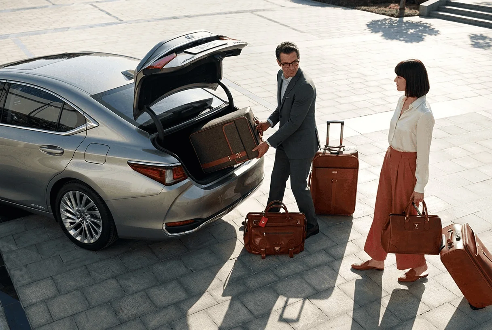

Odesa - Uman Private Transfer
Private Odesa - Uman and Uman - Odesa transfer with door-to-door pickup, agreed trip terms and a vehicle reserved for your booking.
Price on request
The final price is confirmed before booking after pickup addresses, departure time, vehicle class, passenger count and luggage are clarified.
What to know about the Odesa - Uman trip
Odesa - Uman is designed for travellers who want a direct door-to-door journey without mandatory changes. Odesa is a major city in southern Ukraine and a practical starting point for trips across the south, Moldova and Romania; Uman is a central Ukrainian city on the main road corridor between Odesa and Kyiv.
The trip stays within Ukraine. On a route of roughly 271 km it is useful to agree departure time, planned stops and luggage in advance, especially when arrival connects with a train, meeting or onward journey.
The reference road distance is about 271 km. For practical planning, allow roughly 3-4.5 h; this is a planning range rather than a guaranteed arrival time and includes room for stops and possible delays.
If your journey connects with a flight, share the flight number and airport when booking.
Key information
- Road distance
- ≈ 271 km
- Planning time
- 3-4.5 h
- Route type
- Intercity: Ukraine
- Border
- No international border crossing.
- Price
- Price on request
- Route data updated
- 19.09.2026
Distance and time are approximate. The actual journey depends on pickup and drop-off addresses, traffic, stops and, for international routes, border-control time.

Practical route guide
These are route-specific planning details rather than generic promotional copy.
Pickup in Odesa
A specific district, hotel, railway station or other Odesa address can be agreed in advance. For an early departure on a long route, confirming one pickup point helps avoid unnecessary city collection time.
Uman as a direct destination
Uman lies on an important road corridor between southern and central Ukraine. A private transfer allows a specific address to be agreed rather than depending on an intercity bus stop.
Building a realistic schedule
The road-distance reference is about 271 km, with 3-4.5 h as a practical planning window. If the trip connects with a flight, train, meeting or other fixed event, mention it when booking so pickup can be planned backward from the required arrival time.
Why this route is different
Odesa - Uman is short enough to fit comfortably into part of a day. Door-to-door drop-off also makes Uman useful as a final destination, meeting point or connection for a longer itinerary.
Why a private transfer works well on this route
The trip is arranged for your booking only, with pickup, drop-off, timing and luggage agreed in advance.
Door-to-door pickup
Agree a pickup address and final destination in advance without mandatory changes between transport services.
No random co-passengers
The vehicle is reserved for your trip and the agreed number of passengers.
Luggage planned in advance
Tell us about suitcases, a stroller or oversized luggage so the appropriate vehicle can be selected.
Return transfer
A return journey can be arranged for a separate date and time when needed.
How to book
Advance booking is recommended for international and long-distance routes.
1. Send the route
Tell us the cities, date and preferred departure time.
2. Add trip details
Share passenger count, luggage, child-seat needs and planned stops.
3. Confirm the terms
Vehicle, price and pickup details are confirmed before booking.
Odesa - Uman transfer questions
Short answers to practical questions before booking.